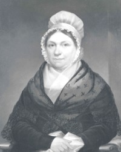

by
Stefan Bielinski
Catharina Van Schaick was born in August 1752.  She was the last daughter born to Albany residents Wessel and Maria Gerritse Van Schaick. She grew up in a comfortable riverfront home and was educated to become a fitting mate for a son of Albany's commercial elite.
After a courtship that included the exchange of letters during the darkest days of the Revolutionary War, in January 1778 Caty was almost twenty-six when she married army officer Peter Gansevoort at the Albany Dutch church. By 1790, their six children had been baptized there.
The early years of their marriage including the hardships of wartime separations have been described by Alice Kenney in The Gansevoorts of Albany.
In 1782, she was bequeathed a share of her father's estate.
After the war, Peter Gansevoort established himself as a leading businessman from his headquarters at the family seat on Market Street. These Gansevoorts were well-known residents of 58 Market Street across from the Market House for the next thirty years.
Following a lengthy illness, Catharina lost her husband during the summer of 1812. The Widow Catharine Gansevoort lived on in their landmark home until December 1830 when she died at age seventy-nine. Her daughter, Maria, was the mother of American literary icon Herman Melville.
notes
 Sources: The life of Catharina Van Schaick Gansevoort is CAP biography number 3942. This profile is derived chiefly from family and community-based resources.
Sources: The life of Catharina Van Schaick Gansevoort is CAP biography number 3942. This profile is derived chiefly from family and community-based resources.
Black-and-white photograph of a portrait by Ezra Ames, and dated 1814. In the collection of the Albany Institute of History and Art.
first posted 10/15/03; updated 1/20/18